Convolutional Neural Networks and Recurrent Neural Networks
Chadi Helwe, PhD
CSC 464: Deep Learning for Natural
Language Processing
Introduction
CNNs and RNNs
Deep Learning
Unlike symbolic AI or classical ML, which often use sparse, discrete representations (like one-hot encoding), Deep Learning relies on dense, continuous vectors.
Deep Learning is a class of machine learning algorithms that uses multiple layers to progressively extract higher-level features from raw input.
It defines a hierarchy of concepts: complex concepts are defined in terms of simpler ones.
CNNs and RNNs
Hierarchical Representation Learning
Deep Learning is fundamentally about representation learning.
Each successive layer builds upon the representations of the previous layer.
Example in Vision: Pixels \(\rightarrow\) Edges \(\rightarrow\) Textures \(\rightarrow\) Object Parts \(\rightarrow\) Whole Objects.
Example in Text: Characters/Sub-words \(\rightarrow\) Words \(\rightarrow\) Syntactic Structures \(\rightarrow\) High-level Semantics.
CNNs and RNNs
Why we Didn't have Deep Learning Sooner?
For many reasons:
-
Hardware Limits: Deep networks require massive matrix multiplications that CPUs are too slow to handle effectively.
-
The Vanishing Gradient Problem: As errors are backpropagated through many layers, gradients often shrink exponentially, meaning early layers learn extremely slowly (or not at all).
-
The Exploding Gradient Problem: Conversely, gradients can grow exponentially, leading to numerical instability and model divergence.
CNNs and RNNs
Endless Possibilities: Application of Deep Learning
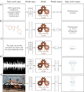
CNNs and RNNs
Machine Learning vs. Deep Learning
| Aspect | Machine Learning | Deep Learning |
|---|---|---|
| Feature Engineering | Requires manual feature extraction | Learns features automatically |
| Model Complexity | Simpler models (e.g., decision trees, SVM) | Complex models (deep neural networks) |
| Data Requirement | Works with small to medium datasets | Needs large amounts of data |
| Interpretability | Easier to interpret | Often a "black box" |
| Training Time | Usually faster | Longer due to complex architectures |
| Examples | Linear regression, KNN, Random Forest | CNNs, RNNs, Transformers |
Convolutional Neural Networks
CNNs and RNNs
Motivation
Our goal is to predict the class of an image (e.g, cat 🐈 or dog 🐕)
Too many parameters (slow and overfits)
Loses spatial structure (neighboring pixels matter!)
If we use a feedforward neural network:
-
Input = all pixels flattened into a vector.
-
Example: 224 x 224 x 3 = 150,528 values.
-
First hidden layer with 1,000 neurons → 150,528 x 1,000 ≈ 150 million weights !
CNNs and RNNs
Why Convolutional Neural Networks (CNNs)? (1/2)
Much fewer parameters + better generalization.
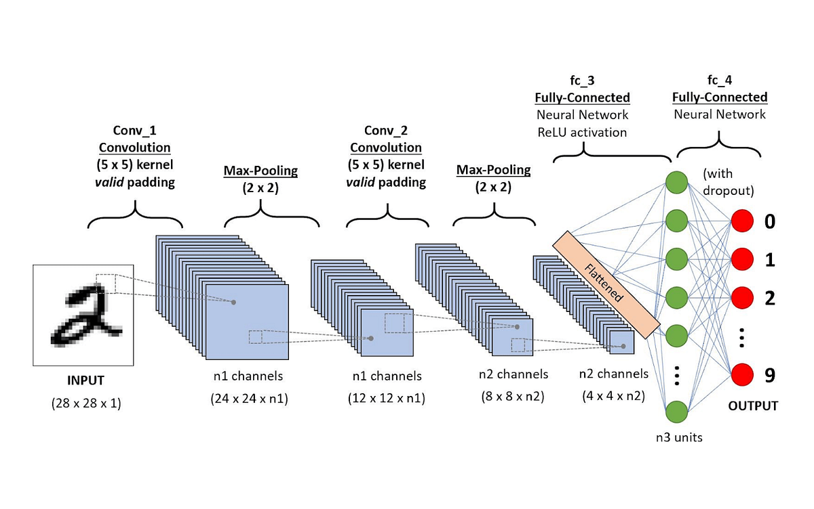
CNNs address the issues associated with using a feedforward neural network:
-
Local connectivity → focus on small regions at a time.
-
Weight sharing → same filter reused everywhere.
-
Spatial awareness → keeps pixel relationships.
CNNs and RNNs
Why Convolutional Neural Networks (CNNs)? (2/2)
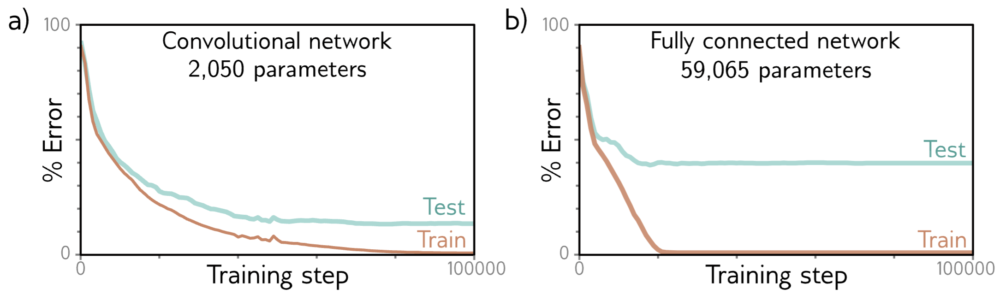
CNNs and RNNs
Hierarchical Feature Learning
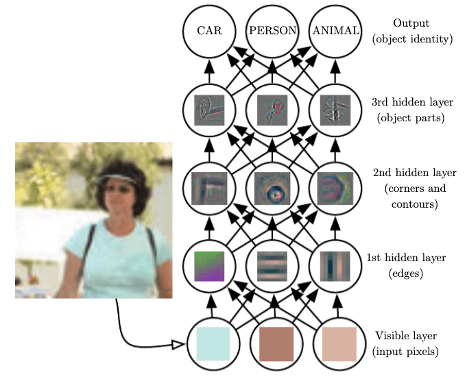
CNN layers build features step by step:
-
Layer 1: edges, colors.
-
Layer 2: corners, textures.
-
Layer 3+: eyes, noses, wheels, etc.
-
Final: full objects (cat, car, face).
CNNs and RNNs
Analogy to Human Vision
CNNs mimic this hierarchy: edges → shapes → objects.
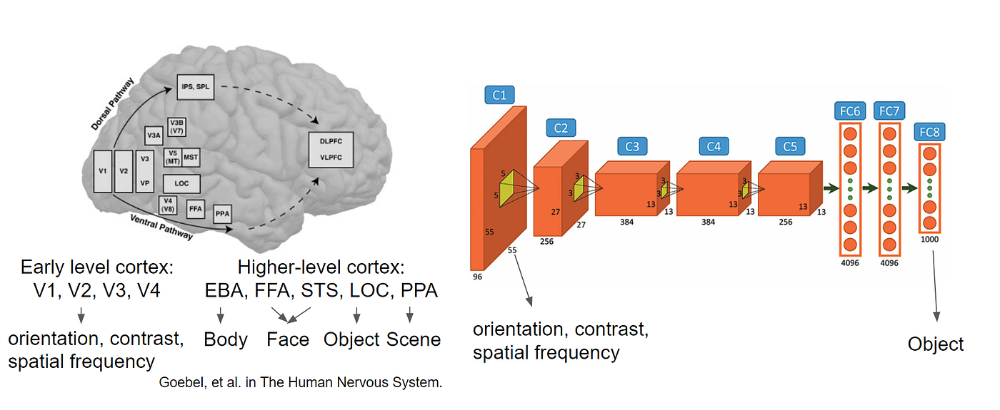
The human visual system processes local features first:
- The retina detects edges, light, and motion.
-
The brain combines into shapes, then into full objects.
CNNs and RNNs
Convolution
Convolution = sliding a filter (kernel) across the image.
Each filter = pattern detector (edges, textures, shapes).
Equation:
Output = feature map → shows where pattern exists.
Feature map
Kernel size
Filter
Translation invariance: It recognizes patterns in an image regardless of where they appear in that image.
Input pixel/feature value at a shifted position. The shift term makes sure the kernel is centered.
CNNs and RNNs
Convolution Example
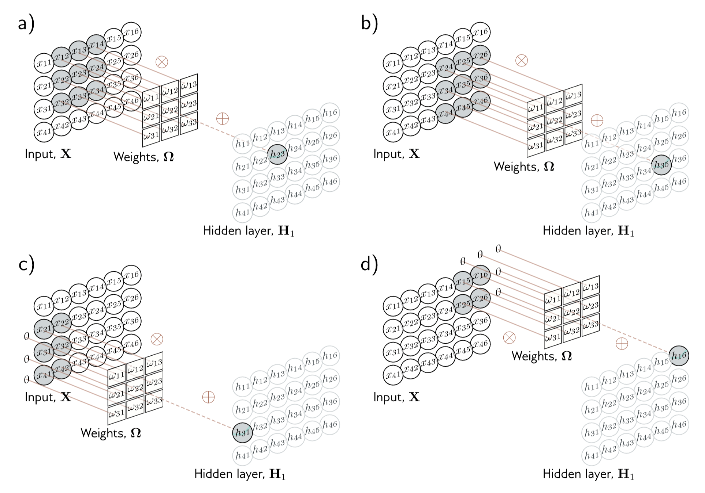
CNNs and RNNs
Filters in Action
Example filters:
-
Detect vertical edges.
-
Detect horizontal edges.
-
Detect curves.
Each produces its own feature map.
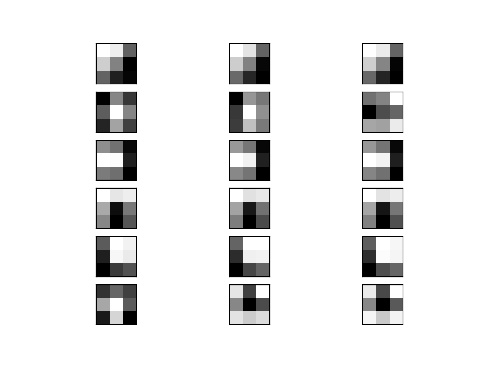
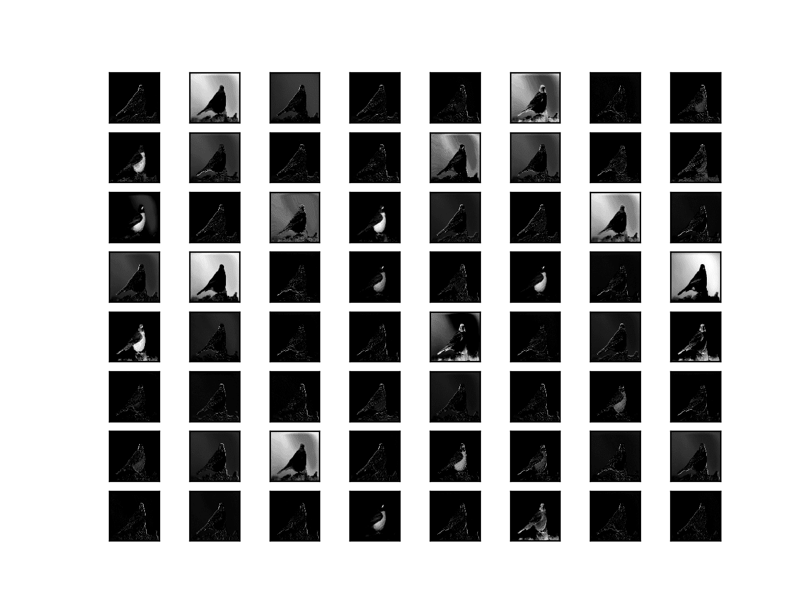
Feature Maps
Filters
CNNs and RNNs
Padding (1/4)
The Problem (Shrinking and Edge Loss): Standard convolutions reduce the spatial dimensions of the output feature map and under-utilize the pixels at the very edge of the input.
The Solution: Zero-Padding adds a border of zeros around the edges of the input matrix before the filter is applied, allowing the filter to center on edge pixels.
Common Padding Strategies:
-
Valid Padding: No padding is added. The output size shrinks (used in our earlier architecture diagram).
-
Same Padding: Zeros are added so the output feature map matches the spatial dimensions of the input.
CNNs and RNNs
Padding (2/4)
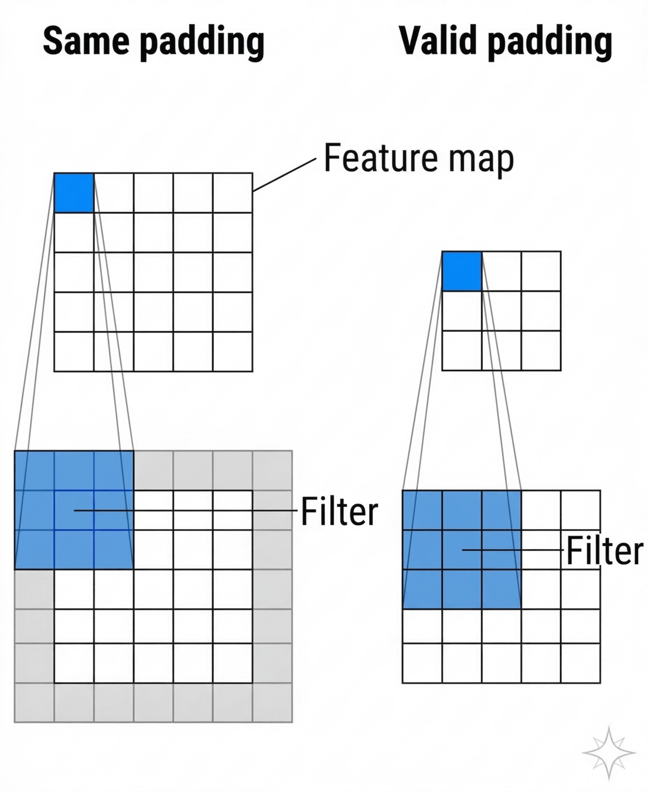
CNNs and RNNs
Padding (3/4)
Calculating Output Dimension (\(O\)):
For an input size \(N\), filter size \(F\), padding \(P\), and stride \(S\):
$$O = \lfloor \frac{N - F + 2P}{S} \rfloor + 1$$
To achieve "Same" padding (assuming \(S=1\)):
$$P = \frac{F - 1}{2}$$
Step size of the filter
CNNs and RNNs
Padding (4/4)
Example:
Given: Input \(28\times28\) (\(W=28\)), Kernel \(5\times5\) (\(F=5\)), Valid Padding (\(P=0\)), Stride (\(S=1\)).
Calculation:
$$O = \lfloor \frac{28 - 5 + 2(0)}{1} \rfloor + 1$$
$$O = 23 + 1 = 24$$
Result: The output feature map is exactly \(24\times24\).
CNNs and RNNs
Nonlinearity (ReLU)
Why Nonlinearity?
-
Without it, CNNs would just be a linear function of inputs → no complex patterns.
-
Nonlinear activation allows the network to learn curves, shapes, and interactions.
Use ReLU activation:
Benefits:
-
Introduces nonlinearity.
-
Makes training faster (avoids vanishing gradients).
-
Keeps model simple and efficient.
CNNs and RNNs
Pooling
Images/feature maps still large → need to shrink.
Max Pooling: Keeps the strongest signal in each region.
Benefits:
-
Dimensionality Reduction: Shrinks the size of the feature maps → fewer parameters → faster computation.
-
Translation Invariance: Distortions in the input won’t change the pooled result much.
It is a window of the input feature map that we look at to compute the output value.
CNNs and RNNs
Pooling Example
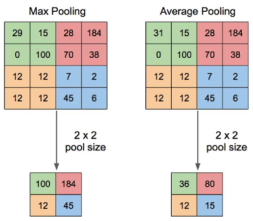
CNNs and RNNs
Fully Connected Layers
After feature extraction, CNN flattens data.
Dense layers combine features for classification.
Equation:
Output: probabilities across classes (e.g., Cat 85%, Dog 10%).
CNNs and RNNs
Putting it All Together
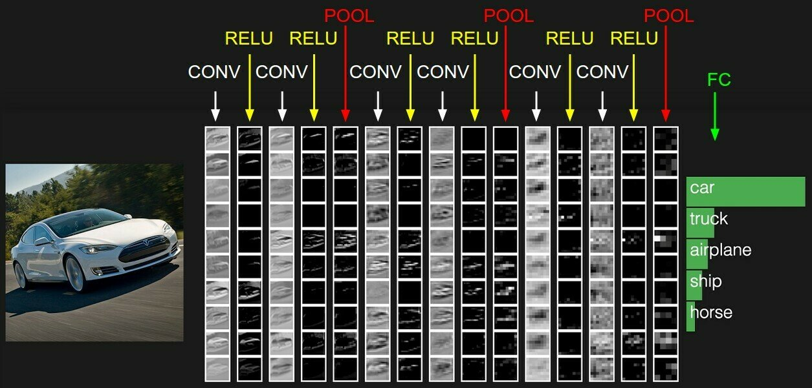
Flow:
-
Input image
-
Convolution + ReLU
-
Pooling
-
More Convs + Pooling
-
Fully Connected Layers
-
Softmax Output
CNN Architectures
CNNs and RNNs
Evolution of CNN Architectures
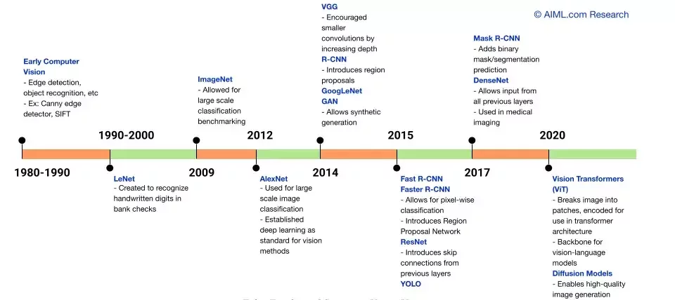
CNNs and RNNs
VGG: Deep but Simple
Uses 3×3 convolutional filters only, plus 2×2 pooling.
VGG16 → 13 convolutional layers + 3 FC layers
Stacking 3×3 filters ≈ larger receptive field.
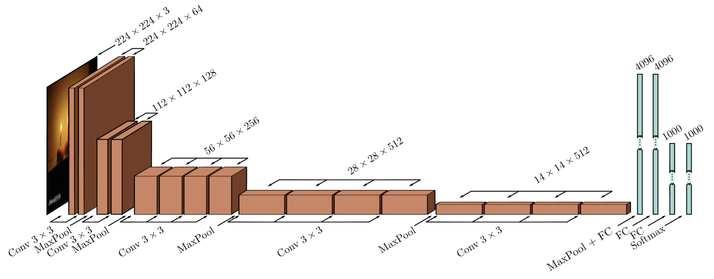
CNNs and RNNs
ResNet: Key Idea
Makes gradient flow easier → train very deep networks (50, 101, 152 layers)
Problem:
- Deeper networks → harder to train.
-
Vanishing gradients → accuracy plateaus or even drops after a certain depth.
Solution: Residual Learning
Residual or skip connections are branches in the computational paths, whereby the input to each layer is added back to the output.
CNNs and RNNs
Residual Connections
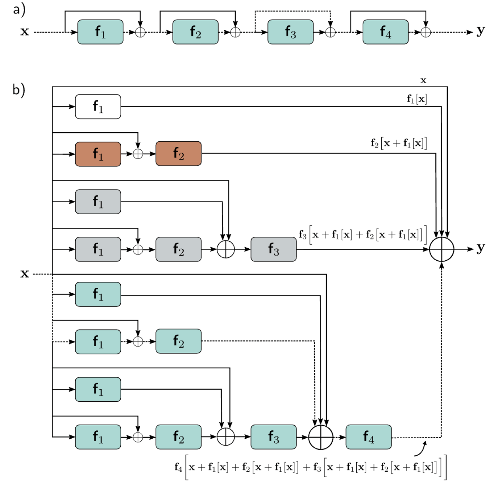
CNNs and RNNs
Why ResNet Matters?
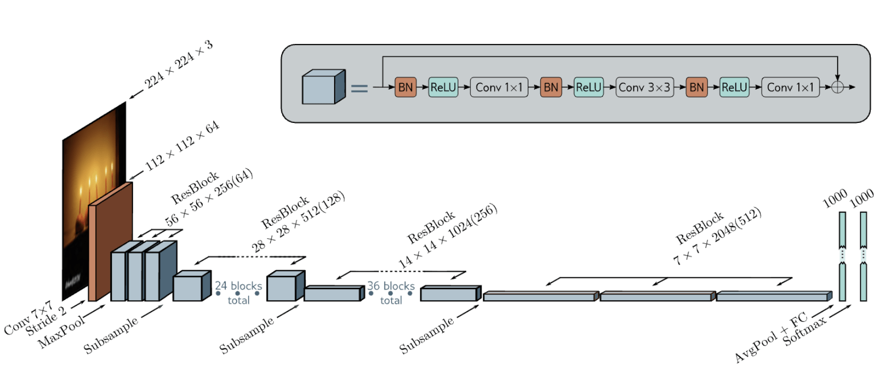
Benefits:
-
Allows much deeper models to be trained successfully (50, 101, 152 layers)
-
Solves the vanishing gradient problem with skip connections
-
Improves accuracy and generalization across tasks
-
More efficient than VGG (fewer parameters, better performance)
CNN for NLP
Wait, CNNs for Text?
In Vision (2D): CNNs slide a 2D filter over a grid of pixels to find spatial patterns (edges, shapes, faces).
In NLP (1D): CNNs slide a 1D filter over a sequence of words to find semantic patterns (phrases, n-grams, sentiments).
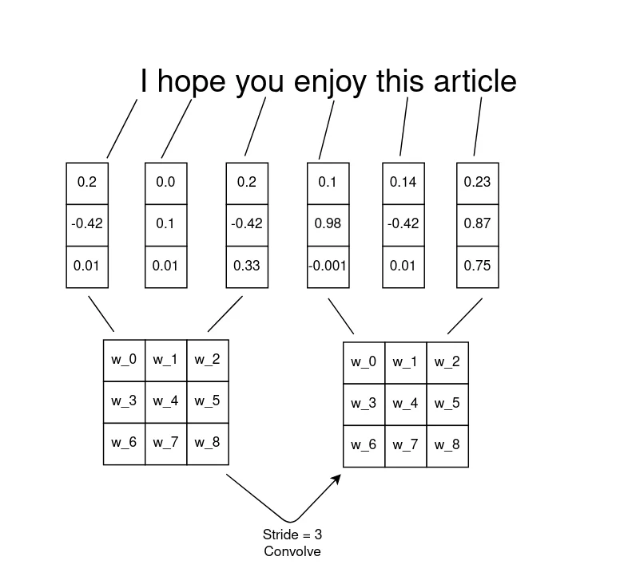
CNNs and RNNs
The "Pixels" of Text
Machine learning or deep learning models cannot read raw text; they need numbers.
Embeddings: Each word is converted into a dense vector of numbers (e.g., using Word2Vec or GloVe) that captures its meaning.
The Matrix: A sentence becomes a matrix where each row is a word, and each column is a feature of that word's meaning.
CNNs and RNNs
The 1D Convolution
The Filter: A small matrix (kernel) that slides over the text matrix.
Kernel Size: Determines how many words we look at simultaneously (e.g., a size of 2 looks at bigrams, a size of 3 looks at trigrams).
Pattern Matching: The filter multiplies its weights by the word vectors to detect specific phrases (e.g., "not good", "highly recommend").
CNNs and RNNs
Max Pooling
Dimensionality Reduction: Convolutions generate a lot of feature maps. We need to shrink this data.
Global Max Pooling: For each filter, we just take the single highest value it produced across the entire sentence.
Why it works: It captures the most important feature (e.g., the strongest indicator of sentiment) regardless of where it appeared in the sentence.
CNNs and RNNs
Why Use CNNs for NLP?
Pros:
-
Fast and Parallelizable: CNNs can process the whole sentence at once.
-
Parameter Efficient: They require fewer computational resources.
-
Great at Local Patterns: Highly effective for tasks where a single phrase determines the outcome.
Cons:
-
Poor Long-Range Memory: They struggle to connect a word at the beginning of a long paragraph with a word at the end.
CNNs and RNNs
CNN Implementation for Text Classification
Loading the Data
CNNs and RNNs
from datasets import load_dataset
# Download the IMDB dataset (automatically splits into train/test)
print("Downloading IMDB data...")
dataset = load_dataset("imdb")
# Look at the structure
print(dataset)
print("\nSample Review:", dataset['train'][0]['text'][:100], "...")
print("Label:", dataset['train'][0]['label']) # 1 = Positive, 0 = NegativeTokenization
CNNs and RNNs
from transformers import AutoTokenizer
# Load a pre-built, industry-standard tokenizer (BERT's vocabulary)
tokenizer = AutoTokenizer.from_pretrained("bert-base-uncased")
# Create a function to tokenize, pad, and truncate our text
def preprocess_function(examples):
return tokenizer(examples["text"],
padding="max_length", # Pad short reviews with 0s
truncation=True, # Chop long reviews
max_length=500) # Set max length to 500 words
# Apply this function to the entire dataset at blazing speed
print("Tokenizing dataset...")
tokenized_datasets = dataset.map(preprocess_function, batched=True)Dataloaders
CNNs and RNNs
import torch
from torch.utils.data import DataLoader
# 1. Remove the raw text column (PyTorch only wants numbers)
tokenized_datasets = tokenized_datasets.remove_columns(["text"])
# 2. Tell Hugging Face to format the output as PyTorch Tensors!
tokenized_datasets.set_format("torch")
# 3. Create PyTorch DataLoaders
batch_size = 128
train_loader = DataLoader(tokenized_datasets["train"], shuffle=True, batch_size=batch_size)
test_loader = DataLoader(tokenized_datasets["test"], batch_size=batch_size)Building the CNN
CNNs and RNNs
import torch.nn as nn
import torch.nn.functional as F
class TextCNN(nn.Module):
def __init__(self, vocab_size, embed_dim, num_filters, kernel_size, hidden_dim):
super(TextCNN, self).__init__()
self.embedding = nn.Embedding(vocab_size, embed_dim)
self.conv1d = nn.Conv1d(embed_dim, num_filters, kernel_size)
self.fc1 = nn.Linear(num_filters, hidden_dim)
self.dropout = nn.Dropout(0.5)
self.fc2 = nn.Linear(hidden_dim, 1)
def forward(self, input_ids):
# input_ids shape: (batch_size, seq_len)
x = self.embedding(input_ids)
# Permute for CNN: (batch_size, embed_dim, seq_len)
x = x.permute(0, 2, 1)
x = F.relu(self.conv1d(x))
x = F.adaptive_max_pool1d(x, 1).squeeze(2)
x = F.relu(self.fc1(x))
x = self.dropout(x)
return torch.sigmoid(self.fc2(x))Training Setup
CNNs and RNNs
import torch.optim as optim
device = torch.device('cuda' if torch.cuda.is_available() else 'cpu')
# Note: We use the tokenizer's vocab size (~30,522 for BERT)
model = TextCNN(vocab_size=tokenizer.vocab_size,
embed_dim=128,
num_filters=128,
kernel_size=5,
hidden_dim=64).to(device)
criterion = nn.BCELoss()
optimizer = optim.Adam(model.parameters())The Training Loop
CNNs and RNNs
epochs = 3 # Reduced to 3 for faster classroom execution
for epoch in range(epochs):
model.train()
running_loss = 0.0
for batch in train_loader:
# Hugging Face provides dicts, so we grab 'input_ids' and 'label'
inputs = batch['input_ids'].to(device)
labels = batch['label'].float().to(device) # BCE expects floats
optimizer.zero_grad()
outputs = model(inputs).squeeze(1)
loss = criterion(outputs, labels)
loss.backward()
optimizer.step()
running_loss += loss.item()
print(f"Epoch {epoch+1}/{epochs} - Loss: {running_loss/len(train_loader):.4f}")Evaluation
CNNs and RNNs
model.eval()
correct = 0
total = 0
with torch.no_grad():
for batch in test_loader:
inputs = batch['input_ids'].to(device)
labels = batch['label'].float().to(device)
outputs = model(inputs).squeeze(1)
predicted = (outputs >= 0.5).float()
total += labels.size(0)
correct += (predicted == labels).sum().item()
print(f'Test Accuracy: {correct / total * 100:.2f}%')Transfer Learning
CNNs and RNNs
Motivation
Training deep networks requires:
-
Large labeled datasets
-
Long training time
Many tasks have limited data (e.g., medical images).
Idea: Reuse pre-trained models trained on large datasets (like ImageNet).
CNNs and RNNs
What is Transfer Learning?
Definition: Using knowledge learned on one task/domain (source) to improve performance on another task/domain (target).
Example: Train on ImageNet (1M images) → reuse for medical imaging.
Works because low-level features (edges, textures) are general.
CNNs and RNNs
Approaches
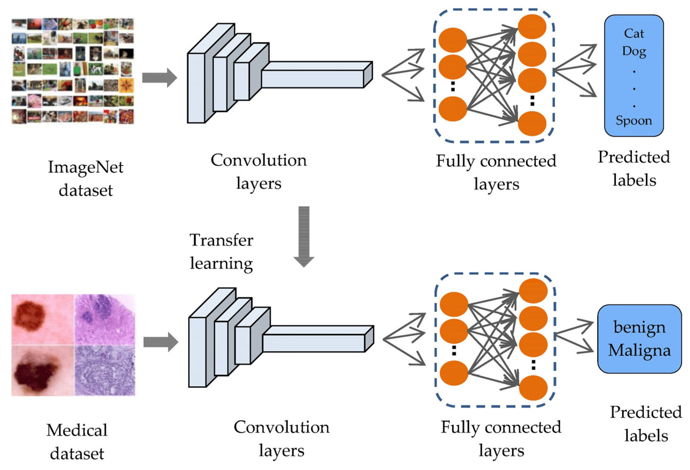
1- Feature Extraction
-
Freeze pretrained model
-
Use as feature extractor
-
Only train final classifier
2- Finetuning
Start with pretrained weights
Unfreeze some layers
Retrain with the new dataset
CNNs and RNNs
Benefits of Transfer Learning
1- Data Efficiency
-
Works well even with small target datasets.
-
Leverages knowledge from large pretrained models (e.g., ImageNet, GPT, BERT).
2- Faster Training
- Start from pretrained weights instead of random initialization.
-
Reduces training time and computing cost.
3- Better Generalization
-
Improves accuracy compared to training from scratch.
-
Captures general features (edges, shapes) that transfer well.
CNNs and RNNs
Transfer Learning with ResNet-18
import torchvision.models as models
import torch.nn as nn
# Load pretrained ResNet18
model = models.resnet18(pretrained=True)
# Freeze feature extractor
for param in model.parameters():
param.requires_grad = False
# Replace final layer for 10 classes
model.fc = nn.Linear(model.fc.in_features, 10)Recurrent Neural Networks
CNNs and RNNs
Why Sequences Matter?
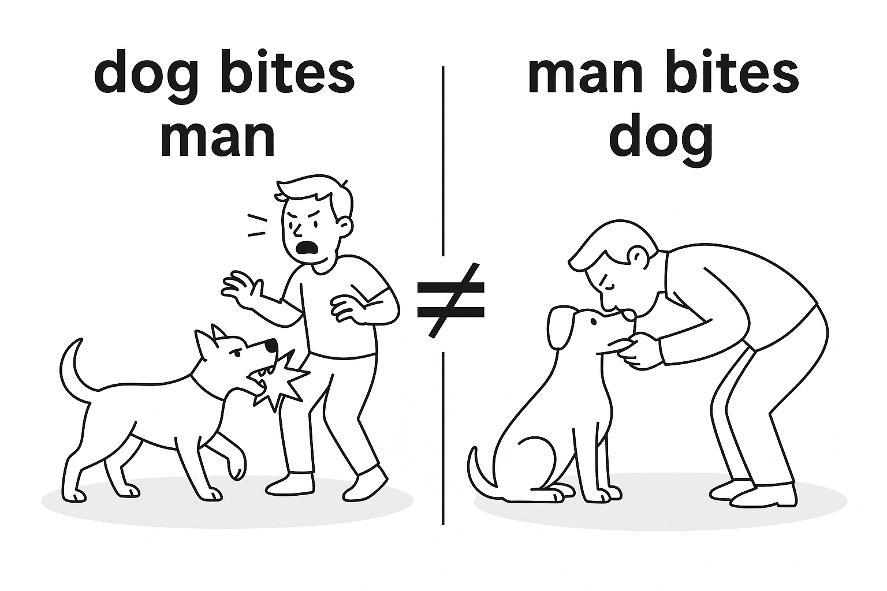
Same words, different order
→ totally different meaning
Many things in life happen in order:
-
Sentences in a story
-
Notes in a song
-
Daily temperatures
CNNs and RNNs
What is a Sequence?
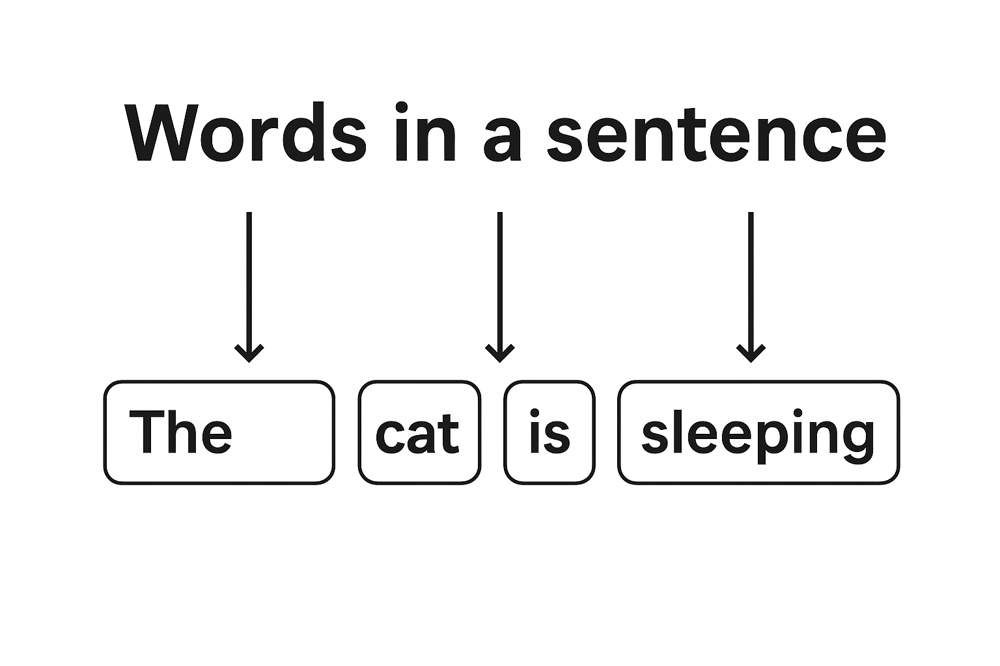
A sequence = a list of items arranged in a specific order.
Example:
-
Words in a sentence
-
Frames in a video
-
Steps in a recipe
CNNs and RNNs
Why FNNs Struggle with Sequences?
Fixed Input Size → Sentences can be short or long, but FNNs expect a fixed shape.
No Memory → They can’t remember past words or context.
Independent Processing → Each word is treated alone, order is ignored.
CNNs and RNNs
Introducing Sequential Models
We need models that remember what came before.
Sequential Models allow us to:
-
Predict the next word in a sentence
-
Recognize speech
-
Generate music
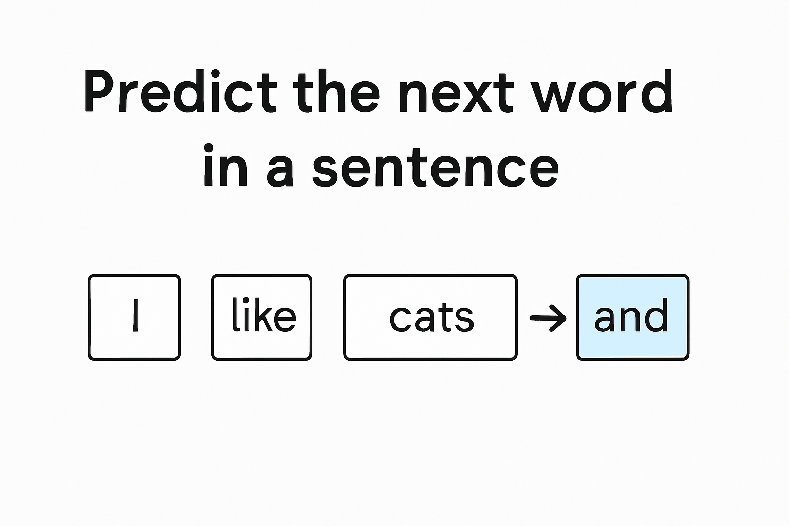
CNNs and RNNs
Sequential Models Timeline
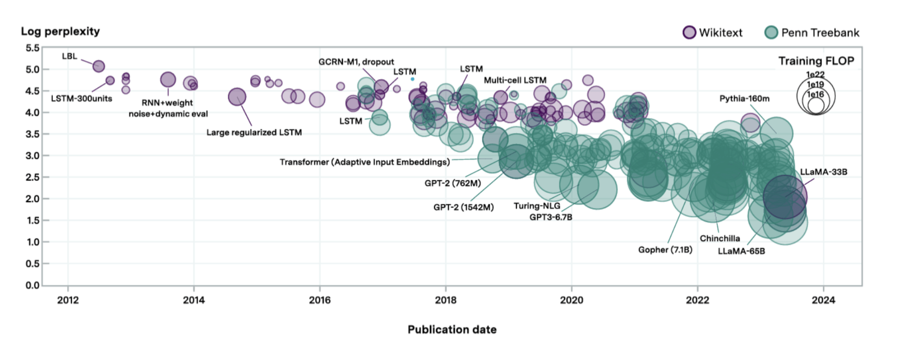
CNNs and RNNs
Recurrent Neural Networks
Vanilla Recurrent Neural Networks (RNNs) are neural networks with memory. They process data step by step and keep track of what came before.
Key feature: a loop that feeds past information forward.
Equation:
Hidden state (memory)
Input
CNNs and RNNs
How RNNs Work?
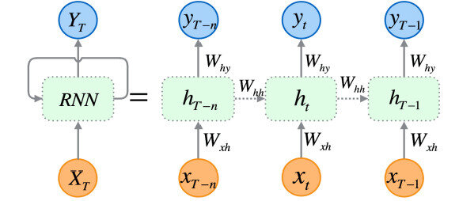
RNNs step-by-step:
-
Take an input (a word, a sound).
-
Combine it with memory from the past.
-
Produce an output + update the memory
-
Repeat this for each step in the sequence.
CNNs and RNNs
Example: Next Word Prediction
Sentence: “The cat is …”
RNN guesses: sleeping
Last hidden state
CNNs and RNNs
Strength of RNNs
Flexible with length → Can handle short or long sequences.
Context-aware → Remembers past inputs.
Order matters → Understands meaning from word order.
Versatile → Works for:
-
📝 Text (next-word prediction)
-
🎤 Speech (recognition)
-
🎶 Music (generation)
-
📈 Time-series (forecasting)
LSTMs and GRUs
CNNs and RNNs
Weaknesses of Vanilla RNNs
Equation:
$$h_t = f\left(W_h h_{t-1} + W_x x_t + b\right)$$
Weaknesses:
-
Forgetting long-term info (short memory).
-
Vanishing gradients: gradients at early layers become ≈ 0.
-
Exploding gradients: gradients grow too large → unstable training
✨ We need a better solution → LSTMs and GRUs
CNNs and RNNs
LSTM Neural Networks (1/3)
Long Short-Term Memory (LSTM) Neural Network was created by Sepp Hochreiter and Jürgen Schmidhuber in 1997.
Designed to fix RNN memory issues.
Key idea: gates control memory.
CNNs and RNNs
LSTM Neural Networks (2/3)
LSTM has two memories:
-
\(C_t\): long-term memory (cell state)
-
\(h_t\): short-term memory (hidden state)
Three gates control the flow
-
Forget gate: \(f_t = \sigma(W_f [h_{t-1}, x_t] + b_f)\)
-
Input gate: \( i_t = \sigma(W_i [h_{t-1}, x_t] + b_i) \) and \(\tilde{C}t = \tanh(W_C [h{t-1}, x_t] + b_C)\)
-
Cell state update: \(C_t = f_t \cdot C_{t-1} + i_t \cdot \tilde{C}_t\)
-
Output gate: \(o_t = \sigma(W_o [h_{t-1}, x_t] + b_o)\) and \(h_t = o_t \cdot \tanh(C_t)\)
Gates
CNNs and RNNs
LSTM Neural Networks (3/3)
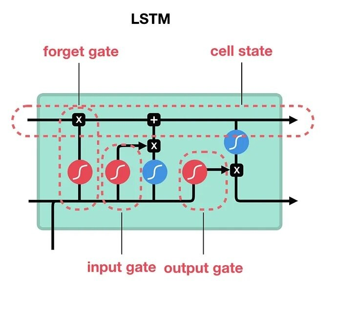
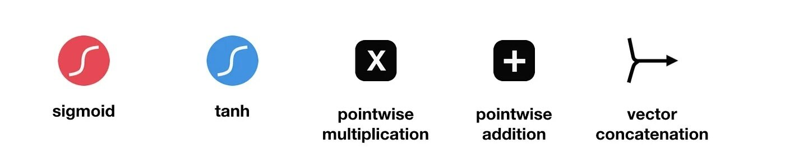
CNNs and RNNs
GRU Neural Networks (1/2)
Gated Recurrent Unit (GRU) Neural Network was invented in 2014.
Like LSTM, but fewer gates → faster.
Gates:
-
Update gate = how much to keep.
- Reset gate = how much to forget.
Equation:
$$h_t = (1 - z_t) \cdot h_{t-1} + z_t \cdot \tilde{h}_t$$
New info
CNNs and RNNs
GRU Neural Networks (2/2)
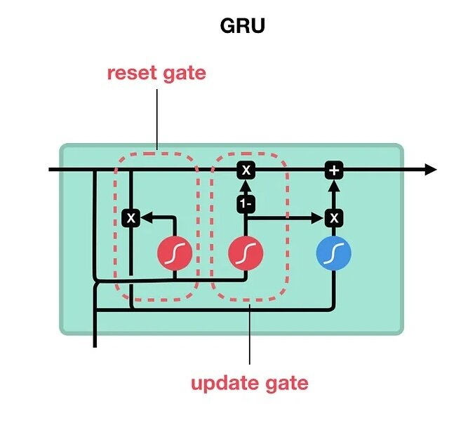
LSTM Implementation for Text Classification
CNNs and RNNs
Loading the Data
from datasets import load_dataset
# Download the IMDB dataset (automatically splits into train/test)
print("Downloading IMDB data...")
dataset = load_dataset("imdb")
# Look at the structure
print(dataset)
print("\nSample Review:", dataset['train'][0]['text'][:100], "...")
print("Label:", dataset['train'][0]['label']) # 1 = Positive, 0 = NegativeCNNs and RNNs
Tokenization
from transformers import AutoTokenizer
# Load a pre-built, industry-standard tokenizer (BERT's vocabulary)
tokenizer = AutoTokenizer.from_pretrained("bert-base-uncased")
# Create a function to tokenize, pad, and truncate our text
def preprocess_function(examples):
return tokenizer(examples["text"],
padding="max_length", # Pad short reviews with 0s
truncation=True, # Chop long reviews
max_length=500) # Set max length to 500 words
# Apply this function to the entire dataset at blazing speed
print("Tokenizing dataset...")
tokenized_datasets = dataset.map(preprocess_function, batched=True)CNNs and RNNs
Dataloaders
import torch
from torch.utils.data import DataLoader
# 1. Remove the raw text column (PyTorch only wants numbers)
tokenized_datasets = tokenized_datasets.remove_columns(["text"])
# 2. Tell Hugging Face to format the output as PyTorch Tensors!
tokenized_datasets.set_format("torch")
# 3. Create PyTorch DataLoaders
batch_size = 128
train_loader = DataLoader(tokenized_datasets["train"], shuffle=True, batch_size=batch_size)
test_loader = DataLoader(tokenized_datasets["test"], batch_size=batch_size)CNNs and RNNs
Building the LSTM
import torch.nn as nn
import torch.nn.functional as F
class TextLSTM(nn.Module):
def __init__(self, vocab_size, embed_dim, hidden_dim):
super(TextLSTM, self).__init__()
self.embedding = nn.Embedding(vocab_size, embed_dim)
self.lstm = nn.LSTM(input_size=embed_dim,
hidden_size=hidden_dim,
batch_first=True)
self.fc1 = nn.Linear(hidden_dim, 64)
self.dropout = nn.Dropout(0.5)
self.fc2 = nn.Linear(64, 1)
def forward(self, input_ids):
# Shape: (batch_size, seq_len) -> (batch_size, seq_len, embed_dim)
x = self.embedding(input_ids)
lstm_out, (hidden_state, cell_state) = self.lstm(x)
last_thought = lstm_out[:, -1, :]
x = F.relu(self.fc1(last_thought))
x = self.dropout(x)
return torch.sigmoid(self.fc2(x))CNNs and RNNs
Training Setup
import torch.optim as optim
device = torch.device('cuda' if torch.cuda.is_available() else 'cpu')
# Note: We use the tokenizer's vocab size (~30,522 for BERT)
model = TextLSTM(vocab_size=tokenizer.vocab_size,
embed_dim=128,
hidden_dim=128).to(device)
criterion = nn.BCELoss()
optimizer = optim.Adam(model.parameters(), lr=0.001)CNNs and RNNs
The Training Loop
epochs = 3 # Reduced to 3 for faster classroom execution
for epoch in range(epochs):
model.train()
running_loss = 0.0
for batch in train_loader:
# Hugging Face provides dicts, so we grab 'input_ids' and 'label'
inputs = batch['input_ids'].to(device)
labels = batch['label'].float().to(device) # BCE expects floats
optimizer.zero_grad()
outputs = model(inputs).squeeze(1)
loss = criterion(outputs, labels)
loss.backward()
optimizer.step()
running_loss += loss.item()
print(f"Epoch {epoch+1}/{epochs} - Loss: {running_loss/len(train_loader):.4f}")CNNs and RNNs
Evaluation
model.eval()
correct = 0
total = 0
with torch.no_grad():
for batch in test_loader:
inputs = batch['input_ids'].to(device)
labels = batch['label'].float().to(device)
outputs = model(inputs).squeeze(1)
predicted = (outputs >= 0.5).float()
total += labels.size(0)
correct += (predicted == labels).sum().item()
print(f'Test Accuracy: {correct / total * 100:.2f}%')